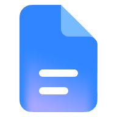
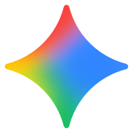

Speak, it types.
Voice typing for Windows that turns what you say into clean, formatted text in any app. Hold a shortcut, talk, let go.
Windows 10 and 11. Free speech on your PC, formatted by the AI you choose.
Works everywhere
you write

Google DocsGmailMurmint types by pasting into the text box you're already in, then puts your clipboard back. It knows which app is in front, so an email is laid out like an email and a chat message stays short.
Dictate
Talk the way you think. Murmint keeps up.
Removes filler words
"Um", "uh", "you know" and accidental repeats are dropped, so what you said reads like what you meant.
Pauses become commas
Stop for a breath in the middle of a thought and you get a comma, not a full stop. A long pause after a full sentence ends it.
Lists, automatically
Name three or more things in a row and Murmint makes the list for you. Counting off first, second, third works too. No commands to remember.
- My passport
- The charger
- Some snacks
- A jacket
Stutters and speech differences
Turn on Speech support and stutters, repeated sounds and restarts come out as the sentence you meant.
Write
Clean text, in the voice you choose.
Better prompts for your AI
Ramble to Claude Code, ChatGPT, Copilot or Cursor the way you think. Murmint turns it into a prompt an AI can act on: the goal first, each request as a clear step, then context and what not to touch. It adds nothing you didn’t say.
- Make the sidebar collapsible.
- Fix the mobile layout.
- The dashboard has been slow on phones since the charts were added.
- Change the colors.
Emails that look like emails
In an email app you get a greeting on its own line, short paragraphs and a sign-off, without saying any of the formatting.
Subject Proposal
Alex
Writing styles
Natural, Casual, Professional, Formal, Concise or Technical, or one you write yourself. Each app can have its own.
Your own rules
Add a rule and Murmint follows it every time. Switch one off without deleting it.
It learns your words
Murmint notices the names and terms you keep saying and suggests them. Add one with a click and it's spelled right from then on. Nothing is added without you.
More
Tools that save you from the keyboard even when you're not talking.
Every app gets its own setup
Murmint knows which app is in front. On the Apps page, give any app its own style, strength and rules, or pick from presets for Discord, Gmail, VS Code and more.
Picks up where you left off
Turn on message context and Murmint reads the text already in the box, so a sentence you continue stays lowercase and matches the tone of what's there.
Better Clipboard
Everything you copy, text and images, with search and pins, plus a full emoji picker with every flag. Pick one and it's pasted where you were typing.
Select, then fix or translate
Highlight text anywhere and one shortcut cleans it up or translates it in place. Live transcription shows your words while you're still talking.
Yours
Your AI, your keys, your PC.
Any AI provider
Use the AI you already pay for, or a model on your own PC. Separate models for hearing and for writing, with fallbacks and a router that keeps the bill small.

GeminiTextSettings that make sense
Shortcuts with any number of keys, hands-free mode, undo for the last insertion, history with the date and time of every dictation, this month's spend on Home, and a small pill near the edge of your screen that hides while a video or game is full screen.
Light and fast
Memory while running, compared
Built small
Private by design
No audio kept
Your voice goes to the speech provider you chose while you dictate. Murmint never stores it.
Keys stay on your PC
API keys are encrypted with Windows and only ever sent to their own provider.
Fully local if you want
Run speech recognition on your PC and format with Ollama or LM Studio, and nothing you say leaves it.
Free your hands from the keyboard
Murmint waits quietly in your system tray until you hold the shortcut.
Not sure if Murmint is right for you?
What do I need to use it?
A Windows 10 or 11 PC and a microphone. Speech works out of the box with Murmint 1, which runs on your PC. For AI formatting, add an API key from a provider such as Groq, Gemini or Cloudflare (all have free tiers), or run a model on your PC with Ollama or LM Studio.
What does it cost?
Murmint has no subscription, and speech with Murmint 1 is free. You pay your AI provider for formatting, usually pennies a month, and Home shows what you've spent. Free tiers and local models cost nothing.
Why does Windows warn me about the installer?
Murmint isn't code-signed yet, and Windows warns about every unsigned app. Click More info, then Run anyway, or build it yourself from the source.
Will it be available for Linux or Mac?
Not yet. It's Windows only during the alpha. Linux and Mac are on the list for later.
Is it a meeting recorder?
No. It's for typing into the app you're using right now.
Join the community
Get early builds, talk to the developer, report bugs and help shape what Murmint does next. The closed alpha lives on Discord.
- Early buildsAlpha testers download new versions first.
- Talk to the developerQuestions, ideas and feedback go straight to the person building it.
- Report bugsFound something odd? Tell us and see it fixed.
- Shape the roadmapVote on what comes next.